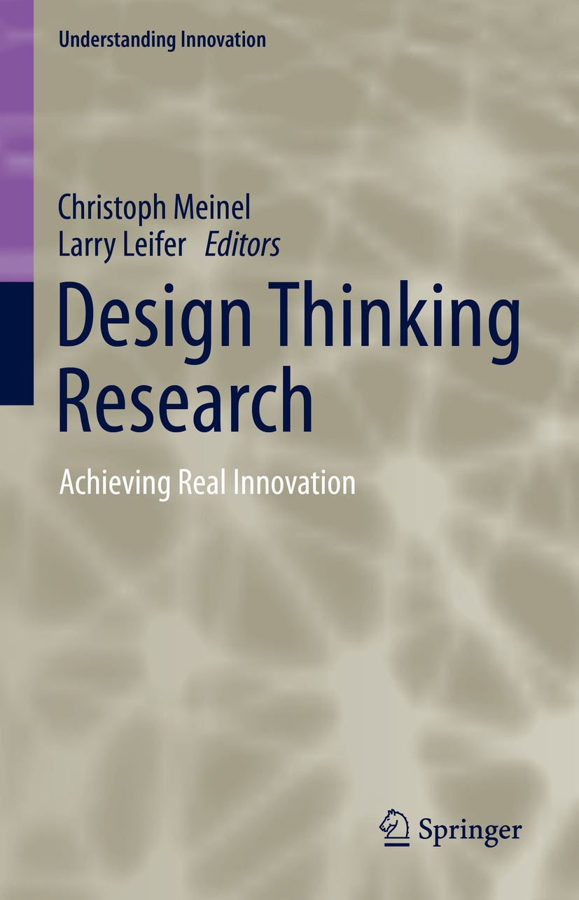
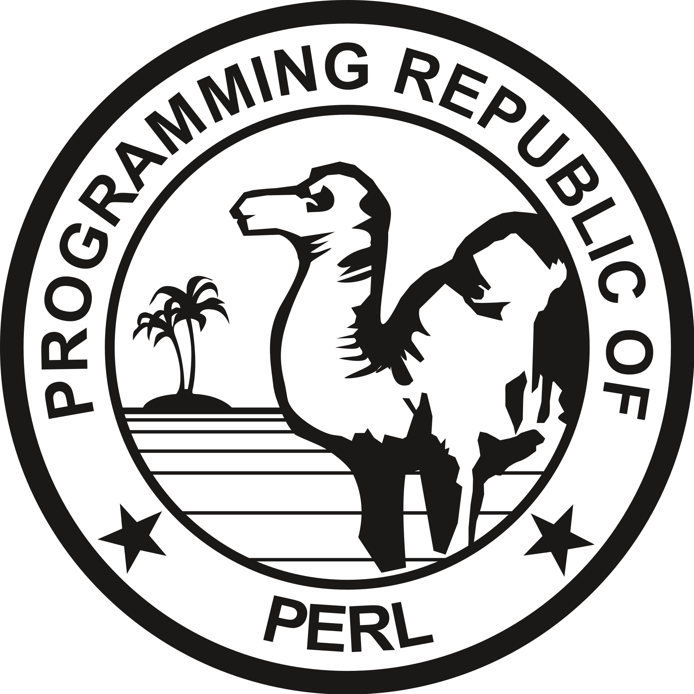
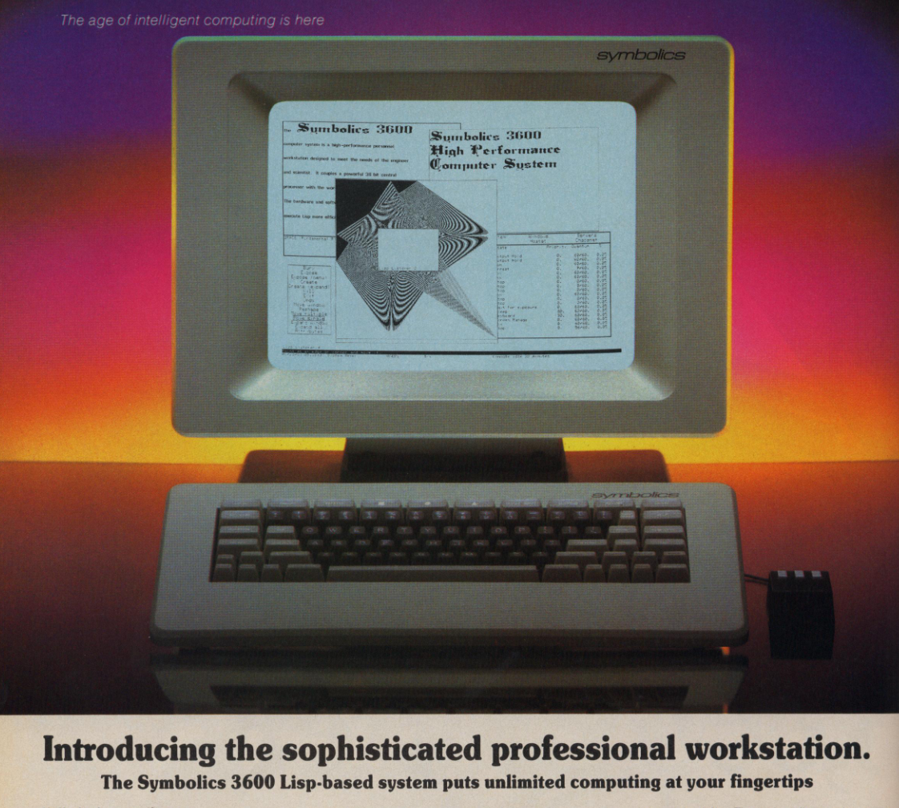

NPRG075
Learning from architecture and design
Tomáš Petříček, 309 (3rd floor)
petricek@d3s.mff.cuni.cz
https://tomasp.net | @tomaspetricek
Lectures: Monday 12:20, S7
https://d3s.mff.cuni.cz/teaching/nprg075

Design and architecture
Solving complex problems

Architecture and urban planning
Understanding and solving complex problems
Organizing large number of diverse entities
Useful concepts and methodologies?

Software architecture
How to organize systems?
How can we study what organization makes sense?
How languages and tools shape organization?
How systems grow as requirements change?
Urban planning
Jacobs on cities
Problems of simplicity
Fully analyzable
Unorganized complexity
Statistically analyzable
Organized complexity
Non-reducible
Parnas on software
Analogy systems
Continuous models
Repetitive digital
Reduce via abstraction
Non-repetitive digital
Non-reducible
Design problems

Design problems are ill-defined
- Full information never available
- Cannot be exhaustively analyzed
- No correct solution may exist
Solving design problems
- Conjectured solution reframes the problem
- Designers impose "primary generator"
- Change problem-as-given in light of solution
Achieving fit
Vernacular
Adaptation over generations

Modernist
Problem analysis and fresh design

Post-modern
Prefers cleverness, humour over fit!

Design patterns
Learning from architecture

Design patterns
Based on Christopher Alexander's work on architecture
Useful but criticized
Missing the point of Alexander's work
Workarounds for coding
in a poor language

Quality without name
A system has it when
it is true to its inner
forces, when it is free
from contradictions
Each "living" pattern resolves a system of forces. When all forces
are resolved, the quality appears.
Why is it hard?

Vernacular method
- Shared language lost from community
- Complexity of problems has grown
- Community cannot build a skyscraper
Modernist method
- Cannot perfectly analyze problem
- Always misses some important detail
- Keeps reinventing imperfect forms
Quality
How is this about programming?
- Think about programmer thinking and coding
- Programming systems, not languages
- Need to resolve complex systems of forces
- Patterns to capture approaches that work
Achieving fit

Design pattern
- Context, problem, forces, solution
- Resolves interconnected forces
- Works as a solution template
Pattern language
- Ordered sequence of patterns
- Can be followed step-by-step
- Ideally shared and agreed on

Degrees of publicness
Context: Where people want to live is different
Forces: Some want to live where the action is, some in more isolation
Problem: How to organize a cluster of homes?
Solution: Distinguish private homes, public homes and in-between
Notebook systems
Designing a complex system

Notebook systems
Literate programming environment - code, outputs, comments
Used for exploration, scientific tasks, data science, learning
How to design exploration environment?
Demo
Using F# in a notebook system
Case study: Notebooks

Notebooks for data science
- Use by FT journalists for article
- Start with "Eurostat exports data"
- tinyurl.com/nprg075-ft
Design questions
- What are the specific forces?
- How are they reflected in the notebooks?
- Which are poorly resolved?
Pattern languages
Designing exploration tools

Exploratory programming workspaces
Environment that lets you figure something out interactively..
Data science, but also general programming
Are there common patterns of working?
Taeumel et al. (2022)
A Pattern Language of an Explora-
tory Programming Workspace
- Patterns in exploratory tools
- Smalltalk, notebooks, UNIX
- System design and ways of using
Conversation in context
- Seven patterns covering three aspects
- Questions, context, responses
- Capture needs, forces, structure, trade-offs, etc.

Programmer, environment, interaction context
"It is all about you working on a project in an environment while continually switching between different interaction contexts"
Conversation in context
Forces resolved by the pattern
- Want to ask question about something
- Finding the right place to ask
- Finding the right words to use
- Understanding complex technical answer

Conversation
in context
Solution structure
Iterative question and answer interaction with persistent context
Support for revising questions asking follow-up questions
Further patterns

Elaborate inquiry
- Difficult to ask complex questions
- Use stepwise composition
- Refer to previous answers
Proxy transport
- Need to access external information
- May be big or use an odd format
- Embed into local context with lazy loading
Further patterns
Context, forces, solution
- Coach your environment by adding information
- Concepts in shards need to be linked
- Simple response to be found iteratively
- Pause and explore to better understand
Pattern languages
Designing pattern languages

Where patterns come from?
Pattern languages
for creating
pattern languages
No single systematic method that would always work
Pattern writing
Where patterns come from
- Shared and evolved in a community
- Repeated solutions in past software systems
- Personal experience with a problem
- Focused group collaboration (origins of wiki!)

A pattern language for pattern writing
(Meszaros+Doble, '97)
How to structure, write and present patterns & pattern languages

A pattern language for creating pattern languages
(Iba+Isaku, 2016)
Hints on
pattern mining
Collect experiences Map and find overlaps Structure in clusters
Practical tips
How to write a pattern language
- Patterns are about resolving forces
- Patterns should have fixed format
- Context, forces, structure, related patterns
- System structure or human interaction with it
Concepts and methods
Learning from architecture

Learning from unaverage clues
(Jacobs, 1961)
Cannot reduce city
to a single statistic
Look for informative singleton clues!
Demo
Commodore 64 BASIC
10 PRINT CHR$(205.5+RND(1)); : GOTO 10

Technical aspects
- Edit & run in one terminal
- Line numbers for navigation
- Simple with
POKEfor hackers
Social aspects
- Path from a user to a programmer
- Commodore 64 boots into BASIC!
- Learn by copying from magazines

What works despite the theory
(Jacobs, 1961)
Elegant theories
that are convincing
but do not work
Document what actually works
in practice instead!
Information hiding

Good software engineering
- Divide systems into modules
- Hide implementation details
- Expose only what is needed
Why should this work?
- Basic principle of OOP!
- Can freely change internals
- Modules developed independently
Information hiding

Brief history
- Decomposing systems (1972)
- IBM OS/360 development (1975)
- Brooks' reflections (1995)
- Cathedral and the bazaar (1999)
Critique and alternatives
- Design is hard to anticipate
- Cumbersome & inefficient uses
- MIDI SysEx and UNIX DWARF work!

Conceptual coherence
(Brooks, 1975)
A clean, elegant programming product must present to each of its users a coherent mental model of the application.
Conceptual integrity
is the most important factor in ease of use.
Post-modern programming
No grand narrative
I set out to deconstruct all the computer languages and recombine them. I lovingly reused features from many languages.
Why this works
- Worse is better
- Postmodernists prefer AND, modernists OR
- Possible to write messy & clean programs
Worse is better
The right thing
- Common LISP, ITS system
- No incorrectness / inconsistency
- Completeness, then simplicity
Worse is better
- UNIX and C language
- Simple is better than correct, consistent & complete
Concepts and methods
Unexplored inspirations

Image of a city
How do we navigate around cities?
And codebases?
Districts, landmarks
and pathways
Good design supports navigability and legibility

Materials
Building materials
that look bad before
they go bad
Software tends to
break abruptly without
any warning...
Is there an alternative?

Vernacular architecture
Achieves a good fit without the continuous reinvention of forms
Can we build software without reinventing forms? Spreadsheets? Configuration?
Conclusions
Learning from architecture

Architecture and design in context
Conceptual design rather than empirical science
Powerful methodologies
for idea generation
Appropriateness is harder to evaluate - wait and see!
Reading

No information hiding?
- Varv: Reprogrammable Interactive Sofware as a Declarative Data Structure
- Available at: http://vis.csail.mit.edu/pubs/varv.pdf
What to read and how
- Declarative, extensible programming!
- Get a sense of how it works (Section 2)
- Look at evaluation (Section 5)
Conclusions
Learning from architecture and design
- Methods & concepts for complex systems
- Architecture, urban planning and design
- Design patterns & pattern languages
Tomáš Petříček, 309 (3rd floor)
petricek@d3s.mff.cuni.cz
https://tomasp.net | @tomaspetricek
https://d3s.mff.cuni.cz/teaching/nprg075
References (1/3)
Recommended
- Parnas, D. L. (1985). Software aspects of strategic defense systems. Communications of the ACM, 28(12), 1326-1335.
- Singer, J. (2020). Notes on notebooks: Is Jupyter the bringer of jollity? In Onward!
- Taeumel, M. et al. (2022). A Pattern Language of an Exploratory Programming Workspace. Design Thinking Research
- Gabriel, R. (1991). Lisp: Good News, Bad News, How to Win Big
Just for fun...
- Symbolics inc. (1983). Introducing the sophisticated professional workstation. IEEE
Design patterns
- Meszaros, G., & Doble, J. (1998). A pattern language for pattern writing. Pattern languages of program design, 3
- Iba, T., & Isaku, T. (2016). A pattern language for creating pattern languages: 364 patterns for pattern mining, writing, and symbolizing. PLoP 2016
- Sasabe, A. et al. (2016). Pattern mining patterns: a search for the seeds of patterns. Conference on Pattern Languages of Programs
Software classics
- Brooks Jr, F. P. (1975). The mythical man-month. Addison-Wesley
- Raymond, E. S. (1999). The cathedral and the bazaar. O'Reilly
- Gamma, E. et al. (1994). Design Patterns: Elements of Reusable Object-Oriented Software. Addison-Wesley.
Architecture books
- Jacobs, J. (1961). The Death and Life of Great American Cities. Random House.
- Alexander, C. (1964). Notes on the Synthesis of Form. Harvard.
- Alexander, C. et al. (1977). A Pattern Language. Oxford.
- Alexander, C. (1979). The Timeless Way of Building. Oxford.
- Lynch, K. (1964). The image of the city. MIT press.
Programming design
- Wall, L. (1999). Perl, the first postmodern computer language. Online
- Noble, J., & Biddle, R. (2004). Notes on notes on postmodern programming. ACM SIGPLAN Notices, 39(12)
- Petricek, T. (2022). The Timeless Way of Programming. Online.
- Clark, C., & Basman, A. (2017). Tracing a paradigm for externalization: Avatars and the GPII Nexus. Salon des Refusés